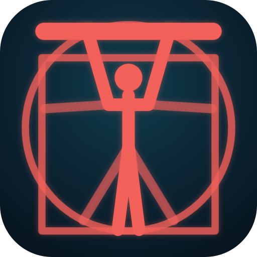

Reps
Tap a rep to jump to it.
- meets the standard
- too close to call
- likely no-rep

Bar gymnastics from one phone
Then choose just the set on the timeline. Kipping and strict pull-ups, chest-to-bar, toes-to-bar, bar muscle-ups and kip swings are recognised on their own.
Record opens the phone's camera app, which films at 60 fps. If it starts on the front camera, flip to the back one; the first time, pick FHD 60 at the top right (it's remembered). Or film in the camera app and choose the video.
To keep it on the home screen: Safari's Share button → Add to Home Screen.
Every set you analyse is kept here, on this phone, to open again.
Tap a set to see its analysis again. Tick sets to keep only their analysed part, or to delete them.
Analysing…
Tap a rep to jump to it.
Grouped by what each rests on: the movement's standard, physics measured on your reps, or a coaching rule. Starting thresholds, to tune with your coach.
The body's energy above the still hang: all of it, and the part that is height. It rises only when the muscles add some. Drag across it to scrub.
In bodyweights: 1 is hanging still. Peaks come with the kip's snap and the pull. Shaded by stage: drive, then down.
Hips and shoulders: + hollow (flexed, legs or arms ahead of the body line), − arch. The kip lives in how far and how fast these swing.
The centre of mass, coloured by speed, and the point that has to reach the bar. True scale. Drag across it to scrub.
How far these numbers can be trusted, and what would make them better next time.
Body tracking downloads a 6–29 MB model the first time. Everything runs on this device; nothing is uploaded.